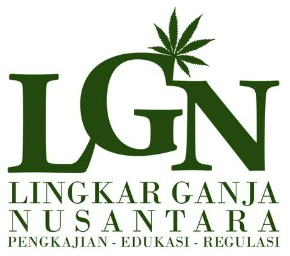

Lupakan semua advokasi ganja untuk kesehatan.
Lupakan semua advokasi ganja untuk rekreasi.
Mari lihat kembali dibalik pelarangan ganja dan apa itu kriminal.
Misalkan ada seorang karyawan yang sedang berakhir pekan. Dia sengaja bangun agak siang, kemudian dia membuat secangkir kopi, dan menghisap se-linting ganja, sambil membaca berita di internet. Siangnya dia berkumpul dengan keluarga di rumah orang tuanya untuk makan siang, saling tukar cerita, bercanda gurau, dan dilanjutkan dengan makan malam dengan pasangannya. Esok harinya dia bekerja seperti biasa.
Pada kasus ilustrasi lainnya, dengan cerita yang sedikit sama, seorang karyawan yang sedang berakhir pekan, yang sengaja bangun agak siang, kemudian dia membuat secangkir kopi, dan menghisap selinting ganja, sambil membaca berita di internet. Tapi beberapa saat kemudian polisi datang ke rumahnya, melakukan penggerebekan dan menemukan tiga linting ganja dan menangkap si karyawan tersebut. Polisi memberikan pilihan untuk membayar sejumlah uang untuk bebas atau masuk penjara. Orang tua si karyawan yang bukan orang kaya, harus bersusah payah meminta pinjaman di sana sini untuk membebaskan anaknya. Berita tertangkapnya pegawai tersebut juga diketahui oleh perusahaan tempat dia bekerja sehingga menyebabkan dia dipecat beberapa minggu kemudian. Akhirnya karena tidak mampu membayar untuk memperingan hukuman, si karyawan harus mendekam di penjara selama empat tahun.
Dari cerita kita di atas, coba pikirkan bagi anda jawaban dari pertanyaan berikut,
Jika anda berpikir bahwa "Salah si karyawan sendiri menggunakan ganja, itukan barang terlarang". Mari kita coba tinjau ulang kembali kenapa ganja itu barang terlarang. Mulai dari "Kenapa ganja ilegal?", "Kenapa ganja dilarang?" Jika jawaban anda hanya berkisar seperti "Karena pemerintah menetapkannya seperti itu", anda sebaiknya coba mencari tahu lebih jauh atau saya akan coba sedikit menjelaskan sejauh yang saya tahu.
Sejarah singkat peraturan ganja
Ganja dalam Undang-Undang No. 35 Tahun 2009 masuk ke dalam Narkotika Golongan 1 [1]. Kriteria untuk Narkotika Golongan I adalah narkotika yang hanya dapat digunakan untuk tujuan pengembangan ilmu pengetahuan dan tidak digunakan dalam terapi, serta mempunyai potensi sangat tinggi mengakibatkan ketergantungan. Satu-satunya yang bisa digaris bawahi supaya zat bisa masuk ke dalam Golongan 1 adalah mempunyai potensi sangat tinggi mengakibatkan ketergantungan. Pertanyaannya adalah apakah Badan Narkotika Nasional (BNN) pernah melakukan penelitian untuk menguji potensi ketergantungan pada ganja? Sejauh yang saya tahu, tidak.
Anda mungkin beranggapan bahwa walaupun pemerintah kita belum melakukan penelitian, pemerintah dari negara lain mungkin telah melakukannya. Misalnya, pemerintah Amerika pasti telah melakukan penelitian sehingga bisa mengklasifikasikan ganja ke dalam Golongan 1.
Pada tahun 1970, Kongres Amerika memasukkan ganja ke dalam Golongan 1 atas saran dari Wakil Menteri Kesehatan, Dr. Roger O. Egeberg. Egeberg menulis surat yang merekomendasikan tanaman ganja diklasifikasikan dalam Golongan 1, dan hal tersebut tidak berubah sampai sekarang setelah lebih dari 45 tahun. Egeberg menulis dalam suratnya,
"Secara masih tetap ada kekosongan dalam pengetahuan kami tentang tanaman dan efek aktif dari psikotropika yang dikandungnya, rekomendasi dari kami adalah bahwa mariyuana dipertahankan dalam Golongan 1, paling tidak sampai selesainya beberapa penelitian yang sedang berjalan untuk menyelesaikan masalah ini."
Bukan karena bukti ilmiah, tapi karena tidak adanya bukti secara ilmiah, ganja diklasifikasikan dalam Golongan 1. Sekali lagi, surat tersebut dikeluarkan pada tahun 1970. Egeberg menyebutkan tentang penelitian yang sedang berlanjut, tapi tidak pernah selesai sampai sekarang. Sebenarnya Edeberg memiliki informasi tentang penelitian tersebut yang dilakukan 25 tahun sebelumnya oleh New York Academy of Science. Beberapa kesimpulan dari penelitian tersebut adalah mereka menemukan ganja tidak begitu menyebabkan kecanduan. Ketergantungan dari ganja pada orang dewasa beragam, yang diketahui pada saat sekarang hanya berkisar 9% sampai 10% dari pengguna, atau 1 dari 10 orang. Dibandingkan kokain, yang berada dalam Golongan II, dengan tingkat kecanduan 20%, dan lebih parah lagi dengan rokok yang memiliki tingkat ketergantungan 30% (tapi rokok legal di jual dan iklannya ada di mana-mana) [3].
Kuantitas vs. Kualitas
Di sisi lain, BNN sebagai badan pemerintah sibuk dengan pemberantasan, pencegahan, rehabilitasi, pemberdayaan masyarakat dan pembangunan kantor. Sementara itu pengujian dan laboritorium mereka tertinggal jauh. Sejauh ini, terlihat dari situs BNN, hanya ada dua artikel tentang data kegiatan dari UPT Lab Uji Narkoba [4], yang menyiratkan bahwa badan ini lebih bekerja sebagai badan sosial daripada badan medis. Apa efeknya bila sebuah badan lebih bergerak dalam bidang sosial? Salah satu efeknya adalah kinerja sebuah badan lebih dilihat dari kuantitas dari pada kualitas. Misalnya, semakin tinggi kuantitas orang yang ditangkap karena narkoba akan dilihat sebagai kinerja yang bagus. Semakin banyak yang direhabilitasi semakin bagus. Kenapa? Bukannya seharusnya sebaliknya?
Beberapa bulan yang lalu, Mei 2013, Direktur Diseminasi Informasi BNN mengeluarkan pernyataan seperti berikut [5],
Direktur Diseminasi Informasi Badan Narkotika Nasional (BNN), Gun Gun Siswandi, mengatakan bahwa kerugian ekonomi yang ditimbulkan akibat penyalahgunaan narkoba pada 2012 di Indonesia mencapai lebih kurang Rp 55 triliun.
"Komponen biaya ekonomi yang dikeluarkan akibat penyalahgunaan narkoba, antara lain biaya membeli narkoba, biaya terapi, biaya rehabilitasi, biaya produktivitas yang hilang, kematian akibat narkoba, dan tindakan kriminal," kata Gun Gun.
"Bayangkan jumlah uang sebanyak itu jika digunakan untuk membangun sekolah, perguruan tinggi, rumah sakit, jalan dan jembatan atau memberikan lapangan pekerjaan bagi orang-orang yang menganggur," kata Gun Gun.
Sementara itu, pada bulan Juni 2013, Komjen Polisi Sutanto menyatakan,
supaya Pemda-pemda di Indonesia juga mendirikan Badan Narkoba di tingkat Pemda-pemda yang dibiayai oleh pemda setempat. Dengan demikian "motto pencegahan dini lebih baik daripada mengobati" dapat tercapai. [6]
Dari kedua pernyataan tersebut bisa dilihat ironi dan kontradiksi pernyataan mereka. Ya, kalau saja semua biaya untuk BNN dan Kepolisian yang ditujukan untuk perang terhadap narkoba tersebut dipindahkan ke pembangunan sekolah, perguruan tinggi, rumah sakit, jalan dan jembatan atau membuat lapangan pekerjaan mungkin akan mengurangi jumlah masyarakat pengguna narkoba. Kenyataannya tidak begitu -- satu-satunya pernyataan yang benar adalah dengan adanya BBN memberikan lapangan pekerjaan baru bagi masyarakat.
Kita fokus pada masalah narkoba lebih kepada sebagai tindakan kriminal bukan dengan mendidik masyarakat dan memberikan masyarakat kesempatan untuk berpikir sendiri. Masyarakat seperti anak kecil yang dilarang, dituntun, tidak dipercaya, dan dianggap tidak bertanggung jawab.
Ada yang lucu dari kepanjangan Narkoba yaitu Narkotika, Psikotropika, dan Bahan Berbahaya Lainnya. Sampo, sabun, minyak, bensin, gas, detergen, dan benda-benda lain juga semestinya termasuk bahan berbahaya, tapi tidak termasuk ke dalam Narkoba karena fungsi-nya berbeda. Ada sebuah analogi yang menarik dari "bahan berbahaya". Saat kematian seseorang disebabkan oleh kendaraan, katakanlah, kecelakaan -- apalagi pada saat lebaran, hal itu dilihat seperti masalah biasa bagi pemerintah. Jumlah kematian karena kecelakaan pada tahun 2012 sekitar 27.441 orang [7], dibandingkan dengan Narkoba sekitar 15.000 [6] (kedua informasi tersebut tidak berdasarkan data yang rinci, hanya informasi yang diberikan oleh sumber kepada wartawan). Tapi, pada saat ada satu orang yang mati atau tertangkap karena narkoba, apalagi selebriti, media meliput-nya gila-gilaan.
Sementara itu belum ada laporan kematian karena ganja [8], kecuali pengguna yang overdosis menggunakan narkotika jenis lain yang lebih berbahaya bersamaan dengan ganja. Konyolnya, ganja selalu diikut-ikutkan sebagai penyebab dari kematian tersebut sehingga citra-nya menjadi lebih buruk dengan disamakan dengan jenis narkotika lainnya, padahal tidak.
Apa yang kriminal?
Kembali ke pertanyaan pertama saya, "Bagian mana yang merupakan tindak kriminal dari karyawan tersebut?".
Apa itu kriminal? Salah satu definisi kriminal yaitu segala macam bentuk tindakan dan perbuatan yang merugikan secara ekonomis dan psikologis yang melanggar hukum yang berlaku dalam negara Indonesia serta norma-norma sosial dan agama [9]. Harus didefinisikan lagi siapa yang dirugikan dalam tindakan kriminal.
Mari kita lihat lagi ke dasar, melihat kenapa masyarakat harus memiliki peraturan dan larangan. Dalam tatanan kehidupan bermasyarakat, peraturan dibuat untuk mengurangi konflik antar kelompok atau perseorangan. Misalkan, larangan mencuri dibuat dan diberikan hukuman supaya tidak ada orang yang mengambil barang hak milik orang lain. Dengan kata lain peraturan dibuat untuk menjaga kestabilan dan kedamaian bermasyarakat. Kalau misalkan saya mencuri barang milik saya sendiri tentu saja itu bukan kriminal. Kalau misalkan saya menggunakan ganja dengan uang sendiri, untuk kepentingan sendiri tanpa merugikan orang lain di sekitar saya, apakah saya masih bisa disebut dengan kriminal?
Pada saat masa depan seseorang hancur selamanya hanya karena daun yang dibakar dan dihisap siapakah yang harus disalahkan? Hukum? Undang-undang? Polisi? Hakim? atau orang itu sendiri?
Dalam kehidupan bermasyarakat ada peraturan tersendiri untuk usia yang diperbolehkan melakukan sesuatu. Misalkan untuk menikah, undang-undang membatasi pada usia 18 tahun. Untuk dapat memilih dalam pemungutan suara usianya harus 17 tahun atau sudah menikah. Untuk mendapatkan KTP dan SIM anda harus berusia 17 tahun atau sudah menikah. Seharusnya juga ada aturan usia untuk menggunakan jenis narkotika tertentu, seperti ganja. Hal ini supaya pengguna memiliki tanggung jawab sendiri atas apa yang mereka lakukan, bukan menjadikan mereka sebagai kriminal, bukan menyamakan mereka dengan para koruptor, pemerkosa, pencuri, dan pembunuh. Berikan tanggung jawab tersebut kepada keluarga mereka jika pengguna di bawah umur, atau ditanggung negara jika mereka tidak memiliki keluarga. Sudah saatnya pemerintah melihat masyarakatnya sebagai manusia-manusia yang berpikir sendiri dan dewasa, yang dapat mempertanggungjawabkan perbuatan mereka sendiri.
--
[1] http://www.bnn.go.id/portal/_uploads/perundangan/2009/10/27/uu-nomor-35-tahun-2009-tentang-narkotika-ok.pdf
[2] http://www.incb.org/documents/Psychotropics/green_lists/Green_List_ENG_2010_53991.doc
[3] http://www.druglibrary.org/schaffer/library/studies/lag/lagmenu.htm
[4] http://www.bnn.go.id/portal/index.php/konten/view/upt-lab/kegiatan
[5] http://www.republika.co.id/berita/nasional/umum/13/05/27/mng4pr-bnn-kerugian-akibat-narkoba-di-indonesia-capai-rp-55-triliun
[6] http://www.merdeka.com/pernik/15-ribu-orang-meninggal-akibat-narkoba-w22xi9q.html
[7] http://www.bin.go.id/awas/detil/197/4/21/03/2013/kecelakaan-lalu-lintas-menjadi-pembunuh-terbesar-ketiga
[8] http://dx.doi.org/10.1016%2FS0163-7258%2802%2900252-8
[9] http://www.referensimakalah.com/2012/10/pengertian-kriminalitas-menurut-bahasa.html